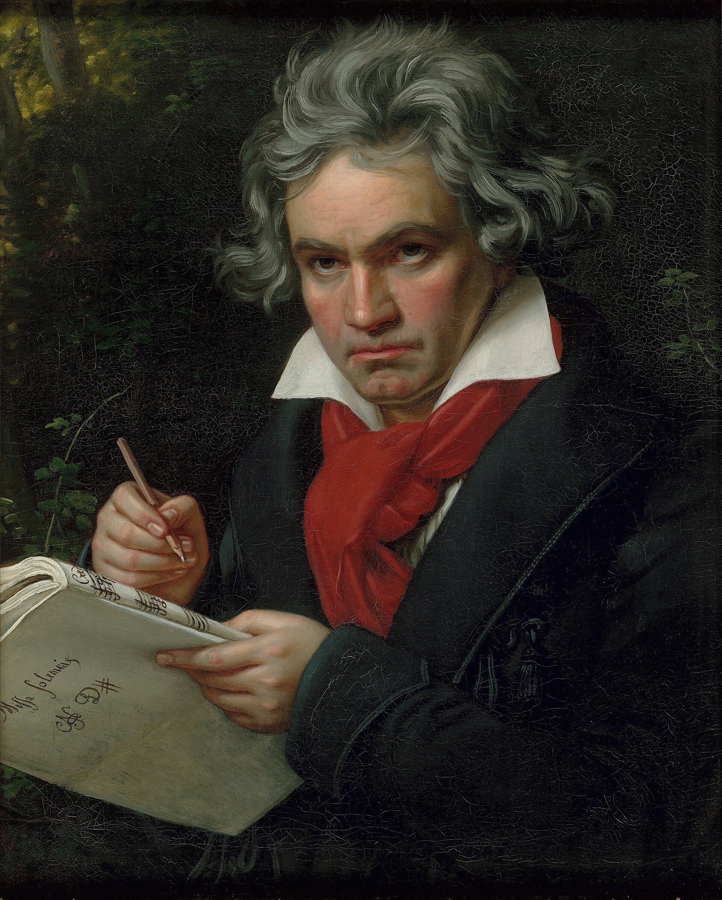

MUSIC / LUDWIG VAN BEETHOVEN
贝多芬的交响世界
九部作品，一份结构档案

肖像手稿为《庄严弥撒》，并非交响曲。
作品 / 首次演出年份
第一交响曲 · C大调
第二交响曲 · D大调
第三交响曲 · 降E大调
第四交响曲 · 降B大调
第五交响曲 · C小调
第六交响曲 · F大调
第七交响曲 · A大调
第八交响曲 · F大调
第九交响曲 · D小调
年份含私人演出；第三部以1804年私人演出计。
每部交响曲的乐章数
单位：个 · 数量描述结构，不代表艺术价值。
第六《田园》分为五个乐章，其余八部各四个。
目录：Eastman School of Music · 肖像：Joseph Karl Stieler，1820